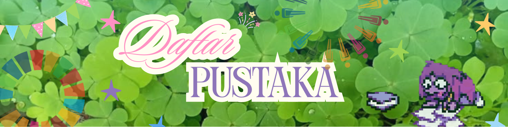

Sumber informasi dan referensi yang digunakan dalam penyusunan website SDGs 10.
Sustainable Development Goals (SDGs)
Kunjungi sumber Diakses 19 November 2026, pukul 10.07SDG 10 – Pengurangan Ketimpangan
Kunjungi sumber Diakses 15 November 2026Mengenal Tujuan 10 SDGs: Berkurangnya Kesenjangan
Kunjungi sumber Diakses 16 November 2026The SDGs Wedding Cake: A New Way of Understanding the Goals
Kunjungi sumber Diakses 21 November 2026Tujuan Pembangunan Berkelanjutan (SDGs) di Indonesia (PDF)
Kunjungi sumber Tanggal akses tidak dicantumkanIndependent Mid-Term Review: Australia–Indonesia Partnership Towards an Inclusive Society (INKLUSI)
Kunjungi sumber Diakses 24 November 2026ASEAN Consensus on the Protection and Promotion of the Rights of Migrant Workers (PDF)
Kunjungi sumber Diakses 24 November 2026Siaran Pers – Kerja Sama G20 dan Inklusi Keuangan
Kunjungi sumber Diakses 24 November 2026Kerangka Kerja Sama Pembangunan Berkelanjutan Indonesia–PBB 2026–2030
Kunjungi sumber Diakses 24 November 2026